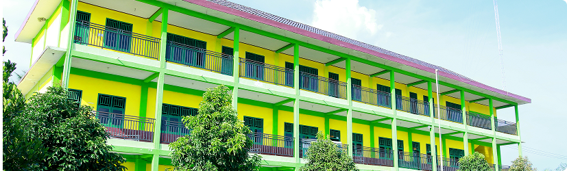

Lembaga Pendidikan
- Pondok Tahfidzul Qur'an
- Pondok Putra
- Pondok Putri
- Madrasah Diniyyah
- Madrasah Qiro'ati
- Madrasah Ibtidaiyyah
- Madrasah Tsanawiyyah
- Madrasah Aliyah
Pondok Tahfidzul Qur'an Pesantren Al-Falah
Lembaga ini memiliki peran penting dalam mengelola seluruh kegiatan santri putra dan putri yang mengikuti program Tahfidz Al-Qur’an di Pondok Pesantren Al-Falah Putak. Setiap santri yang tergabung dalam program ini mendapatkan pembinaan yang terarah agar mampu menghafal Al-Qur’an dengan baik dan benar sesuai dengan kaidah tajwid. Proses hafalan dilakukan secara bertahap dan berkelanjutan, dengan bimbingan langsung dari para ustaz dan ustazah yang berpengalaman di bidang tahfidz.
Selain fokus pada hafalan, lembaga ini juga memberikan perhatian terhadap pemahaman dan pengamalan isi Al-Qur’an dalam kehidupan sehari-hari. Santri diajarkan untuk memahami makna ayat yang dihafalkan sehingga tidak hanya menguasai secara lisan, tetapi juga mampu meneladani nilai-nilai yang terkandung di dalamnya. Dengan demikian, para santri diharapkan tumbuh menjadi pribadi yang berilmu, berakhlak mulia, dan memiliki kepekaan sosial yang tinggi.
Kegiatan pembelajaran di lembaga Tahfidz Al-Qur’an dilaksanakan dengan jadwal yang teratur, mulai dari setoran hafalan, murojaah, hingga pelatihan tartil dan tahsin. Santri juga didorong untuk mengikuti berbagai kompetisi tahfidz dan tilawah baik di tingkat lokal maupun nasional, sebagai upaya menumbuhkan semangat berprestasi dan meningkatkan rasa percaya diri. Fasilitas belajar yang nyaman serta suasana pesantren yang kondusif turut mendukung proses menghafal agar berjalan dengan optimal.
Melalui lembaga ini, Pondok Pesantren Al-Falah Putak berkomitmen untuk mencetak generasi penghafal Al-Qur’an yang tidak hanya fasih dalam bacaan, tetapi juga memahami esensinya sebagai pedoman hidup. Setiap santri dibina untuk menjadi teladan bagi masyarakat, membawa nilai-nilai Al-Qur’an dalam sikap, tutur kata, dan perbuatan. Dengan pembinaan yang berkesinambungan, lembaga ini menjadi salah satu pilar utama dalam mewujudkan visi pesantren untuk mencetak generasi Qurani yang berilmu dan berakhlak.